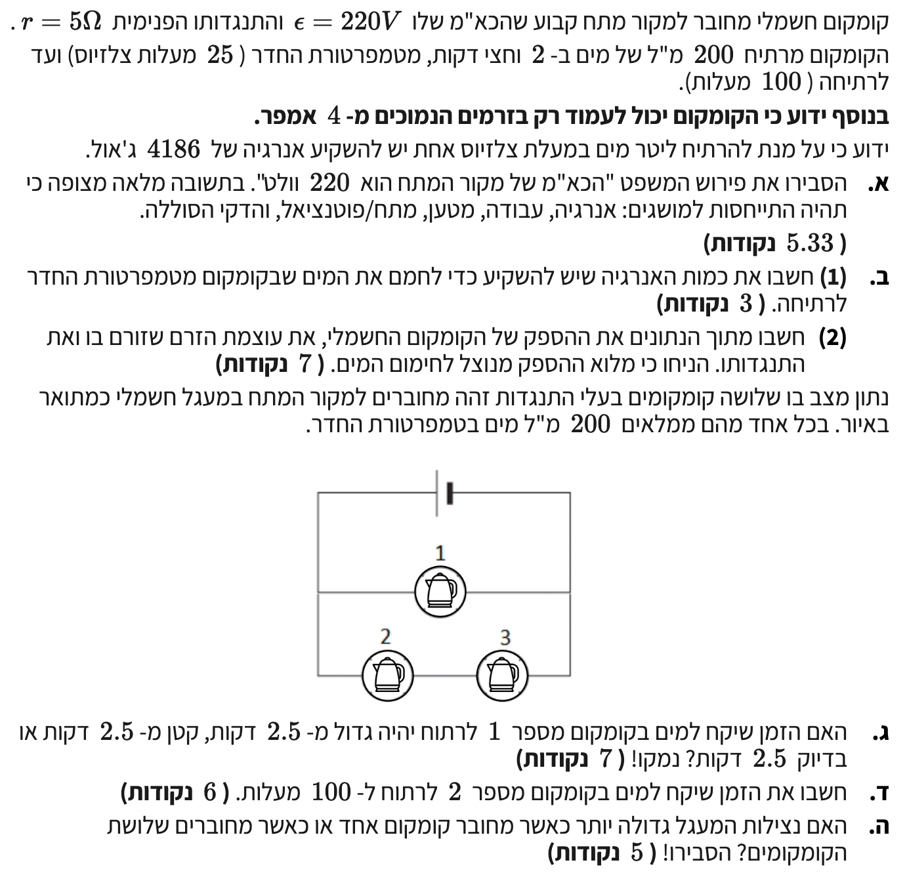

פתרון מוסבר: חשמל - מעגלי קומקומים
פיזיקה 5 יח"ל / שאלה 3 (מתכונת 28/5)
צעד אחר צעד, מרמת הבסיס ועד להבנה מלאה
עודכן:
--- --:--:--
מבוא לבעיה
תלמידים יקרים, לפנינו שאלת בגרות קלאסית המשלבת מושגים של מעגלי זרם ישר (DC) עם חוקי שימור אנרגיה ותהליכי חימום. בשאלה זו ננתח קומקום חשמלי המחובר למקור מתח אמיתי (בעל התנגדות פנימית), ולאחר מכן נבדוק מה קורה כאשר מחברים מספר קומקומים יחד. ניגש לכל סעיף בצורה שיטתית ומסודרת.

[תמונת השאלה המקורית]
לא נמצאה תמונה בשם question-image.png באותה תיקייה.
מה נתון:
נתון כי למקור המתח יש כא"מ של \( \varepsilon = 220\text{V} \).
מה מחפשים:
אנו מתבקשים להסביר במילים ברורות את משמעות המשפט "הכא"מ של מקור המתח הוא 220 וולט", תוך התייחסות למושגים: אנרגיה, עבודה, מטען, מתח/פוטנציאל והדקי הסוללה.
נוסחאות ועקרונות בשימוש:
העיקרון הפיזיקלי עליו נשען הסעיף קשור לעבודת הכוח החשמלי. מתוך נוסחה זו בדף הנוסחאות, הכא"מ מתאר את העבודה ליחידת מטען.
\( W_{A \to B} = V_{AB} I t = q V_{AB} \)
הסבר פיזיקלי מקיף:
אם נבודד את המתח מהנוסחה, נקבל \( V_{AB} = \frac{W_{A \to B}}{q} \). הכוח האלקטרו-מניע (כא"מ) מסמל את האנרגיה המקסימלית שמקור המתח מסוגל להעניק ליחידת מטען.
המשמעות של \( \varepsilon = 220\text{V} \) היא שמקור המתח מבצע עבודה של 220 ג'אול על מנת להעביר מטען חשמלי של 1 קולון מההדק השלילי להדק החיובי בתוך הסוללה (כנגד השדה החשמלי). במילים אחרות, זהו מתח ההדקים (הפרש הפוטנציאלים המקסימלי) של הסוללה כאשר היא מנותקת ממעגל חשמלי ואינו זורם בה זרם.
טיפ מורה: אל תתבלבלו מהשם!
השם "כוח אלקטרו-מניע" הוא שם היסטורי מטעה. הכא"מ נמדד בוולטים (ג'אול לקולון) ולא בניוטונים. הוא איננו מתאר "כוח" במשמעות המכנית, אלא אנרגיה פוטנציאלית המוענקת לכל יחידת מטען.
מה נתון:
- נפח המים: \( 200\text{ ml} \). נבצע המרת יחידות לליטרים כדי להתאים לנתון שבשאלה: \( V = 0.2\text{ Liter} \).
- טמפרטורה התחלתית: \( T_1 = 25^\circ\text{C} \).
- טמפרטורת רתיחה (סופית): \( T_2 = 100^\circ\text{C} \).
- הפרש הטמפרטורות: \( \Delta T = 100 - 25 = 75^\circ\text{C} \).
- אנרגיה דרושה לחימום 1 ליטר במעלת צלזיוס אחת היא \( 4186\text{ J} \).
מה מחפשים:
אנו מחפשים את כמות האנרגיה הכוללת \( \Delta E \) שיש להשקיע כדי לחמם 0.2 ליטר מים ב- 75 מעלות צלזיוס.
נוסחאות ועקרונות בשימוש:
עקרון יחס ישר: על פי הנתון המופיע בשאלה (לא בדף נוסחאות), קיימת תלות ליניארית (יחס ישר) בין כמות האנרגיה המושקעת, נפח המים והפרש הטמפרטורות הדרוש.
חישוב:
נבנה את משוואת היחס הישר ונציב את הנתונים:
\[
\begin{aligned}
\Delta E &= V \cdot 4186 \cdot \Delta T \\
\Delta E &= 0.2 \cdot 4186 \cdot 75 \\
\Delta E &= 0.2 \cdot 313950 \\
\Delta E &= 62790\text{ J}
\end{aligned}
\]
מסקנה: כמות האנרגיה שיש להשקיע היא \( \Delta E = 6.28 \cdot 10^4\text{ J} \) (או \( 62790\text{ J} \)).
טיפ מורה: המרת יחידות זה הסוד!
שימו לב! נתנו לנו מים ביחידות של מ"ל. מיד המרנו לליטרים (חילקנו ב-1000) כי הנתון של התרמודינמיקה בשאלה התייחס לליטרים. עבודה עם יחידות תואמות מונעת טעויות חישוב נפוצות.
מה נתון:
- אנרגיה שהושקעה (מסעיף קודם): \( \Delta W = 62790\text{ J} \) בנצילות של 100%.
- זמן הפעולה: 2.5 דקות. נמיר יחידות לשניות: \( \Delta t = 2.5 \cdot 60 = 150\text{ s} \).
- התנגדות פנימית של המקור: \( r = 5\Omega \).
- כא"מ המקור: \( \varepsilon = 220\text{V} \).
- אילוץ חשוב: הקומקום יכול לעמוד רק בזרמים הנמוכים מ-4 אמפר (\( I < 4\text{A} \)).
מה מחפשים:
אנו מחפשים לחשב את ההספק החשמלי של הקומקום \( P \), ולאחר מכן למצוא את עוצמת הזרם הזורם בו \( I \) ואת התנגדותו הפנימית \( R \).
נוסחאות ועקרונות בשימוש:
נוסחאות מדף הנוסחאות שישמשו אותנו לשם מציאת ההספק, המתח והזרם:
\( \overline{P} = \frac{\Delta W}{\Delta t} \)
\( W_{A \to B} = V_{AB} I t = q V_{AB} \)
\( V_{ab} = \varepsilon - rI \)
\( V = RI \)
חישוב:
שלב 1: מציאת ההספק החשמלי
\[ P = \frac{62790}{150} = 418.6\text{ W} \]
שלב 2: בניית משוואה לזרם במעגל
הקומקום הוא הצרכן היחיד במעגל, ולכן מתח ההדקים של הסוללה נופל במלואו עליו. מתוך נוסחת העבודה נפתח את ביטוי ההספק להמשך: \( P = \frac{V_{ab} \cdot I \cdot t}{t} = V_{ab} \cdot I \).
נציב את מתח ההדקים בביטוי שפיתחנו עבור ההספק:
\[
\begin{aligned}
P &= V_{ab} \cdot I = (\varepsilon - rI) \cdot I = \varepsilon I - rI^2 \\
418.6 &= 220I - 5I^2
\end{aligned}
\]
נסדר את המשוואה הריבועית ונפתור בעזרת נוסחת השורשים:
\[
\begin{aligned}
5I^2 - 220I + 418.6 &= 0 \\
I_{1,2} &= \frac{220 \pm \sqrt{(-220)^2 - 4 \cdot 5 \cdot 418.6}}{2 \cdot 5} \\
I_{1,2} &= \frac{220 \pm \sqrt{48400 - 8372}}{10} = \frac{220 \pm \sqrt{40028}}{10} \\
I_1 &= 42.0\text{ A} \quad , \quad I_2 = 1.993\text{ A}
\end{aligned}
\]
היות ונתון כי הקומקום עומד בזרמים הנמוכים מ-4 אמפר, נפסול את התשובה של 42 אמפר ונקבל כי הזרם הוא 1.993 אמפר.
שלב 3: מציאת התנגדות הקומקום
נחשב תחילה את מתח ההדקים ולאחר מכן בעזרת חוק אוהם נמצא את ההתנגדות:
\[
\begin{aligned}
V_{ab} &= 220 - 5 \cdot 1.993 = 210.035\text{ V} \\
R &= \frac{V_{ab}}{I} = \frac{210.035}{1.993} = 105.38 \Omega
\end{aligned}
\]
מסקנה 1: ההספק הוא \( P = 419\text{ W} \)
מסקנה 2: עוצמת הזרם בקומקום היא \( I = 1.99\text{ A} \)
מסקנה 3: התנגדות הקומקום היא \( R = 105 \Omega \)
* התוצאות הסופיות עוגלו ל-3 ספרות מהותיות כמקובל.
רגע של לימוד: למה מתמטיקה נותנת שני פתרונות?
בפתרון פסלנו את התשובה של \( I = 42\text{ A} \) רק בגלל אילוץ טכני של הקומקום בשאלה, אבל מבחינה פיזיקלית יש כאן תובנה מדהימה! המשוואה הריבועית מראה לנו שיש שתי התנגדויות שונות לחלוטין של קומקום שיתנו לנו בדיוק את אותו קצב חימום (הספק של \( 419\text{ W} \)):
- האפשרות שבחרנו: זרם קטן (\( \sim 2\text{ A} \)) והתנגדות קומקום גדולה (\( 105 \Omega \)).
- האפשרות שפסלנו: זרם עצום (\( 42\text{ A} \)) והתנגדות קומקום זעירה (שאם נחשב אותה מתוך חוק אוהם, תהיה בערך \( 0.24 \Omega \)).
אז מה ההבדל ומי יעילה יותר? ההבדל טמון בבזבוז האנרגיה על מקור המתח עצמו! כאשר זורם זרם של \( 42\text{ A} \), ההספק שמתבזבז על ההתנגדות הפנימית של מקור המתח (לפי \( P = I^2 r \)) הוא עצום - כמעט \( 9,000\text{ W} \) שמתבזבזים על חימום הסוללה, לעומת פחות מ- \( 20\text{ W} \) באפשרות שבחרנו. לכן, לשם יעילות אנרגטית וצריכה ביתית בטוחה, תמיד נעדיף צרכנים עם התנגדות גדולה ששואבים זרם קטן ממקור המתח. זרם גבוה מאוד מבזבז את רוב האנרגיה בתוך קווי החשמל ועלול אף לגרום לשריפה.
מה נתון:
מחברים 3 קומקומים זהים (בעלי התנגדות \( R = 105.38\Omega \)) למעגל. קומקום 1 מחובר במקביל לענף ובו קומקומים 2 ו-3 המחוברים בטור.
מה מחפשים:
לקבוע ולנמק: האם הזמן שיקח להרתיח את המים בקומקום מספר 1 במצב החדש גדול מ- 2.5 דקות, קטן מ- 2.5 דקות, או בדיוק 2.5 דקות.
נוסחאות ועקרונות בשימוש:
ניעזר בנוסחאות חיבור נגדים במקביל ונוסחת מתח ההדקים מדף הנוסחאות:
\( \frac{1}{R_T} = \Sigma\frac{1}{R_i} \)
\( V_{ab} = \varepsilon - rI \)
ניתוח לוגי של המעגל:
- במצב ההתחלתי, ההתנגדות החיצונית הייתה מורכבת מקומקום 1 בלבד: \( R_{ext} = R \).
- במצב החדש, חיברנו ענף נוסף במקביל לקומקום 1. על פי הנוסחה לחיבור במקביל, הוספת ענף מקטינה את ההתנגדות השקולה. כעת \( R_{ext\_new} < R \).
- מכיוון שההתנגדות הכוללת של המעגל קטנה, הזרם הכולל דרך הסוללה \( I \) גדל.
- נביט בנוסחת מתח ההדקים: \( V_{ab} = \varepsilon - rI \). מכיוון ש- \( I \) גדל, מפל המתח על ההתנגדות הפנימית (\( rI \)) גדל, ולכן מתח ההדקים \( V_{ab} \) קטן.
- ההספק על קומקום 1 תלוי במתח הנופל עליו (מתח ההדקים). פיתוח נוסחת ההספק נותן: \( P_1 = \frac{V_{ab}^2}{R_1} \). מכיוון שמתח ההדקים ירד והתנגדות הקומקום קבועה, הספקו קטן.
- אם קצב החום (ההספק) קטן, ייקח יותר זמן לספק את אותה כמות אנרגיה הנדרשת לרתיחה.
מסקנה: הזמן שייקח למים בקומקום 1 לרתוח יהיה גדול מ- 2.5 דקות.
טיפ מורה: המלכודת של חיבור במקביל!
תלמידים רבים טועים וחושבים שבגלל שחיברנו במקביל, הקומקום "לא מרגיש" את השינוי וממשיך לקבל את אותו מתח. זה נכון רק עבור מקור מתח אידיאלי (ללא התנגדות פנימית)! ברגע שיש לסוללה התנגדות פנימית \( r \), שאיבת זרם גדולה יותר מהסוללה מפילה את מתח ההדקים שהיא מסוגלת לספק.
מה נתון:
המעגל כולל 3 קומקומים עם התנגדות \( R = 105.38 \Omega \). קומקום 2 ו-3 מחוברים בטור בענף התחתון. האנרגיה לחימום נותרה \( \Delta W = 62790\text{ J} \).
מה מחפשים:
לחשב מספרית כמה זמן בדיוק ייקח למים בקומקום מספר 2 להגיע לרתיחה במצב החדש.
נוסחאות ועקרונות בשימוש:
נשתמש בנוסחאות חיבור הנגדים, חוקי קירכהוף והספק מדף הנוסחאות:
\( R_T = \Sigma R_i \)
\( \frac{1}{R_T} = \Sigma\frac{1}{R_i} \)
\( \Sigma \varepsilon = \Sigma I R \)
\( \overline{P} = \frac{\Delta W}{\Delta t} \)
חישוב:
שלב 1: חישוב התנגדות שקולה של המעגל החיצוני
ענף עליון (קומקום 1): \( R_1 = R \). ענף תחתון (קומקומים 2+3 בטור): נשתמש ב-\( R_T = \Sigma R_i \) ונקבל \( R_{23} = 2R \).
כעת נחשב התנגדות שקולה לשני הענפים במקביל:
\[
\begin{aligned}
\frac{1}{R_{ext}} &= \frac{1}{R} + \frac{1}{2R} = \frac{3}{2R} \\
R_{ext} &= \frac{2}{3}R = \frac{2}{3} \cdot 105.38 = 70.25 \Omega
\end{aligned}
\]
שלב 2: חישוב זרם כולל ומתח הדקים
מתוך חוק קירכהוף (או חוק אוהם למעגל שלם), נחשב את הזרם דרך הסוללה ואת מתח ההדקים:
\[
\begin{aligned}
I_{tot} &= \frac{\varepsilon}{R_{ext} + r} = \frac{220}{70.25 + 5} = 2.923\text{ A} \\
V_{ab} &= \varepsilon - r \cdot I_{tot} = 220 - 5 \cdot 2.923 = 205.385\text{ V}
\end{aligned}
\]
שלב 3: הספק על קומקום 2
מתח ההדקים מתחלק שווה בשווה בין שני הקומקומים שבענף התחתון (כיוון שיש להם התנגדות זהה). נפתח את נוסחת ההספק ונציב:
\[
\begin{aligned}
V_2 &= \frac{V_{ab}}{2} = 102.69\text{ V} \\
P_2 &= \frac{V_2^2}{R} = \frac{102.69^2}{105.38} = 100.06\text{ W}
\end{aligned}
\]
שלב 4: הזמן הדרוש
מתוך נוסחת ההספק הממוצע \( \overline{P} = \frac{\Delta W}{\Delta t} \) נבודד את \( \Delta t \):
\[ \Delta t = \frac{\Delta W}{P_2} = \frac{62790}{100.06} = 627.5\text{ s} \]
מסקנה: הזמן שייקח למים בקומקום 2 לרתוח הוא \( \Delta t = 628\text{ s} \) (כ- 10.5 דקות).
טיפ מורה: שליטה במפל מתח ושימוש בסימטריה!
היכולת לזהות באופן מיידי ששני נגדים זהים בטור "חולקים" את המתח שווה בשווה מקצרת מאוד את החישוב (במקום לחשב קודם את הזרם בענף). זהו בעצם ניצול של סימטריה פיזיקלית: מכיוון ששני הקומקומים בענף הם בעלי התנגדות זהה לחלוטין, למעגל אין "העדפה" לאחד מהם ולכן מפל המתח חייב להתחלק ביניהם באופן זהה. שימוש מושכל בפיצולי מתחים ובשיקולי סימטריה הוא כלי אלגנטי נהדר שחוסך זמן, מפתח אינטואיציה ומונע טעויות אלגבריות בדרך.
מה נתון:
אנו משווים בין שני מצבים: מצב ראשון ובו קומקום אחד, ומצב שני ובו שלושה קומקומים.
מה מחפשים:
להחליט ולהסביר האם נצילות המעגל גדולה יותר כאשר קומקום אחד מחובר או כאשר שלושה קומקומים מחוברים.
נוסחאות ועקרונות בשימוש:
\( \eta = \frac{P_{eff}}{P_{in}} \)
כאשר \( P_{eff} \) הוא ההספק המנוצל על הרכיבים החיצוניים, ו- \( P_{in} \) הוא ההספק המושקע על ידי המקור.
ניתוח הנצילות:
נפתח את ביטוי הנצילות כדי להבין במה הוא תלוי:
\[ \eta = \frac{V_{ab} \cdot I_{tot}}{\varepsilon \cdot I_{tot}} = \frac{V_{ab}}{\varepsilon} \]
נמשיך לפתח על סמך הקשרים \( V_{ab} = I_{tot} R_{ext} \) ו- \( \varepsilon = I_{tot} (R_{ext} + r) \):
\[ \eta = \frac{I_{tot} \cdot R_{ext}}{I_{tot} (R_{ext} + r)} = \frac{R_{ext}}{R_{ext} + r} \]
מביטוי זה ניתן לראות כי הנצילות עולה ככל שההתנגדות החיצונית (\( R_{ext} \)) גדולה יותר יחסית להתנגדות הפנימית. הוספת קומקומים במקביל במצב השני הקטינה את ההתנגדות החיצונית, ולכן יותר מן ההספק מתבזבז על הסוללה עצמה והנצילות יורדת.
מסקנה: הנצילות גדולה יותר כאשר מחובר קומקום אחד בלבד.
טיפ מורה: מהי משמעות הנצילות?
הנצילות מבטאת "כמה קיבלתי מתוך מה שהשקעתי". במעגל חשמלי, הסוללה מייצרת הספק כולל, אך חלק ממנו נבלע בהתנגדות הפנימית. ככל שנחבר צרכנים במקביל, ההתנגדות השקולה של המעגל תקטן, הזרם יגדל מאוד, והסוללה תתבזבז על עצמה (ותתחמם). לכן מעגלים חסכוניים הם מעגלים בעלי התנגדות חיצונית גדולה ככל הניתן.